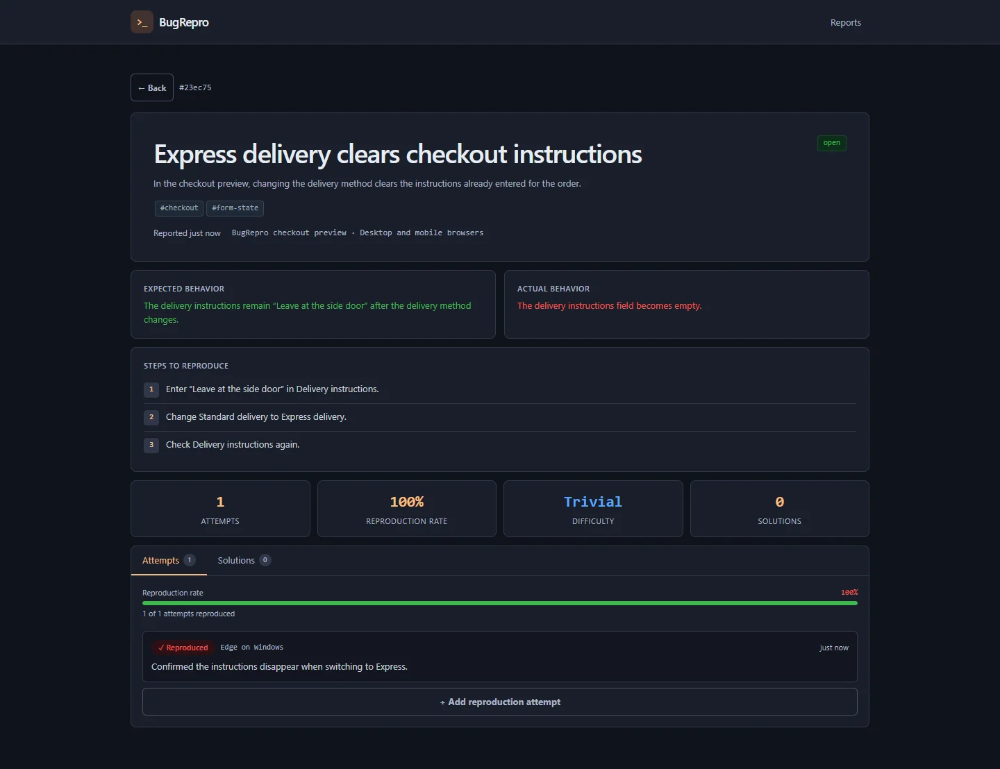

Engineering project · Runtime screenshot
BugRepro
Track a defect from its initial report through reproduction attempts and proposed fixes.
Local demo · Example workflow
View GitHub sourceRun the local demo
From the prepared project checkout, run these commands and open the address printed by the server. The repository may require access.
cd client
npm ci
npm run demo
Problem
Track a defect from its initial report through reproduction attempts and proposed fixes.
Architecture
A React client has a browser-storage demo mode. The full application uses an Express API and MongoDB.
Engineering decisions
- Try a checkout defect, draft a report, log a reproduction attempt, and vote on a proposed fix.
Implemented workflow
- Try a checkout defect, draft a report, log a reproduction attempt, and vote on a proposed fix.
Verified result
Browser checks covered duplicate recovery and persistence. Live MongoDB was outside the verified demo.
Scope and next steps
- The examples use sample data and are designed for local review.
Technology
React · TypeScript · Express · MongoDB
Preview availability
Static runtime preview. No hosted interactive demo is available. The prepared improvements were verified in a local checkout and have not been pushed to GitHub; public source may differ from these captures. Use the repository documentation for the public version's setup requirements.
← Return to portfolio